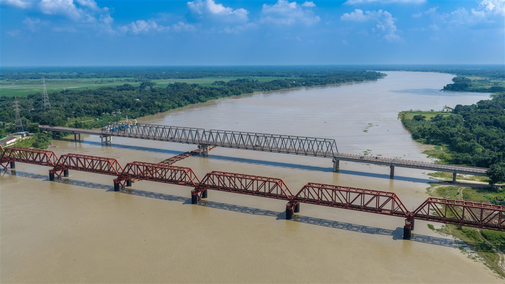
স্থানীয় সরকার প্রকৌশল অধিদপ্তর (LGED), গণপূর্ত অধিদপ্তর (PWD) ও বাংলাদেশ রেলওয়ের জন্য ১০০ মেগাপিক্সেল অপটিক্যাল স্ক্যান, সাব-মিলিমিটার স্ট্রাকচারাল হেলথ মনিটরিং এবং ৪কে এরিয়াল সিনেমাটোগ্রাফি।
রংপুর সেন্ট্রাল হাব সহ ৬৪ জেলার অবকাঠামো সুরক্ষায় ডিজিটাল রূপান্তর
DJI Mavic 4 Pro ড্রোন ১০০ মেগাপিক্সেল অপটিক্যাল জুমে কংক্রিটের অতিক্ষুদ্র ফাটল, রিবার মরিচা, বিয়ারিং স্থানচ্যুতি ও ফাসাদ সিলান্ট লিকেজ নিখুঁতভাবে শনাক্তকরণ।
নদী বা মহাসড়কে যানবাহন ও সাধারণ মানুষের চলাচলে কোনো ব্যাঘাত না ঘটিয়ে বিপজ্জনক উচ্চতায় নিরাপদ ড্রোন ফ্লাইট পরিচালনা।
শুধুমাত্র ফাইল নয়, বরং প্রকৌশলীদের জন্য সার্চযোগ্য BIAMS ওয়েব পোর্টাল ও স্বয়ংক্রিয় পরিদর্শন রিপোর্ট তৈরি।
সরকারি প্রকল্পের উদ্বোধন, ভিআইপি পরিদর্শন ও টেকনিক্যাল মিটিংয়ে প্রদর্শনের উপযোগী সিনেমাটিক গ্রেডিংকৃত ৪কে ভিডিও।
কুষ্টিয়া, বরিশাল এবং গণপূর্ত অধিদপ্তরের (PWD) প্রধান মেগা অবকাঠামোর বাস্তবিক পরিদর্শন ও হাই-রেজুলেশন ডকুমেন্টেশন।
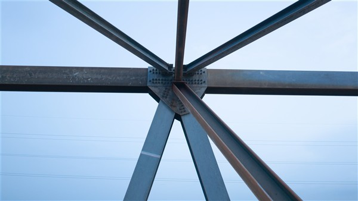
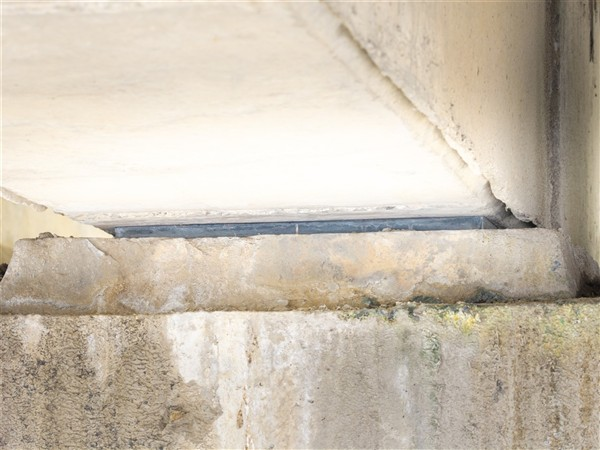
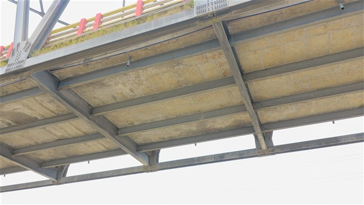
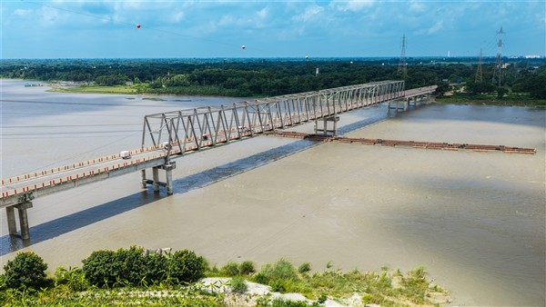
গড়াই নদীর উপর স্থানীয় সরকার প্রকৌশল অধিদপ্তরের (LGED) আওতাধীন গুরুত্বপূর্ণ স্টিল ট্রাস সেতুর প্রতিটি প্যানেল পয়েন্ট, ডায়াগোনাল মেম্বার, এবং সংযোগ করিডোরের উচ্চ রেজোলিউশনের ড্রোন ইন্সপেকশন সম্পন্ন করা হয়েছে। ভারী যানবাহন চলাচলের প্রভাবে ট্রাসের মাইক্রো-মুভমেন্ট ও নাট-বোল্টের নিরাপত্তা নিখুঁতভাবে যাচাই করা হয়েছে।
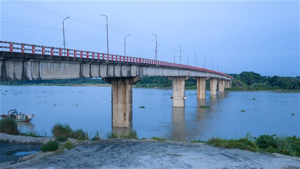
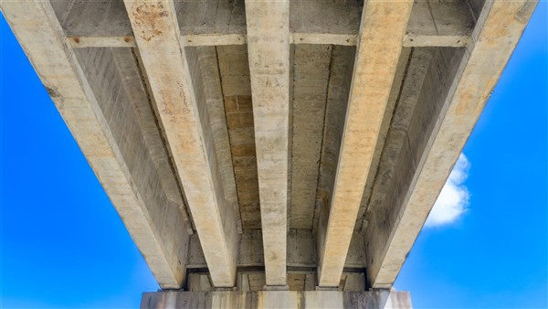
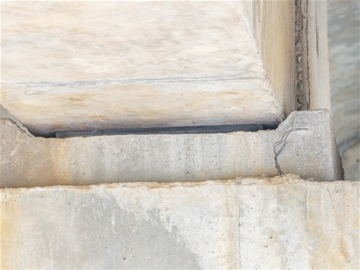
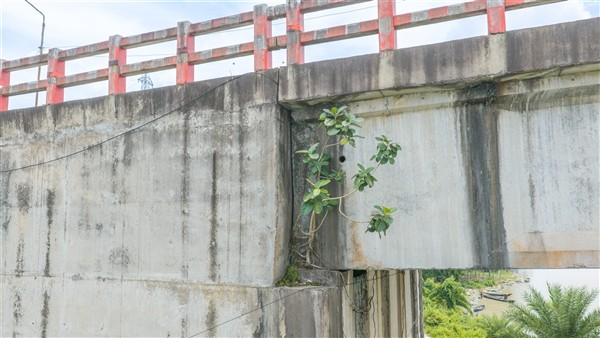
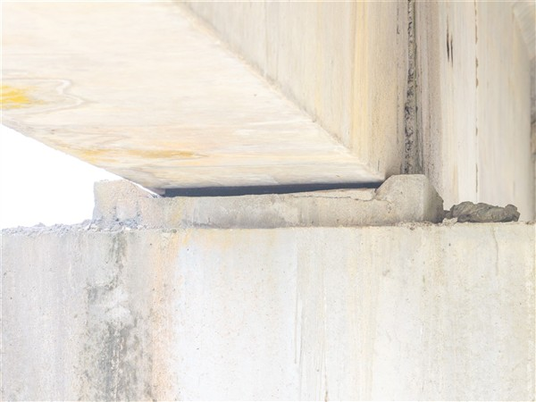
কীর্তনখোলা নদী অববাহিকায় স্থানীয় সরকার প্রকৌশল অধিদপ্তর (LGED)-এর অধীনে নির্মিত মাল্টি-স্প্যান প্রিস্ট্রেসড কংক্রিট আই-গার্ডার সেতুর আন্ডার-ডেক সোফিট, ইলাস্টোমেরিক বিয়ারিং প্যাড এবং রিভারবেড পিয়ারের ড্রোন ক্যামেরা ভিত্তিক নিবিড় ভিজ্যুয়াল ও থার্মাল ইন্সপেকশন সম্পন্ন।
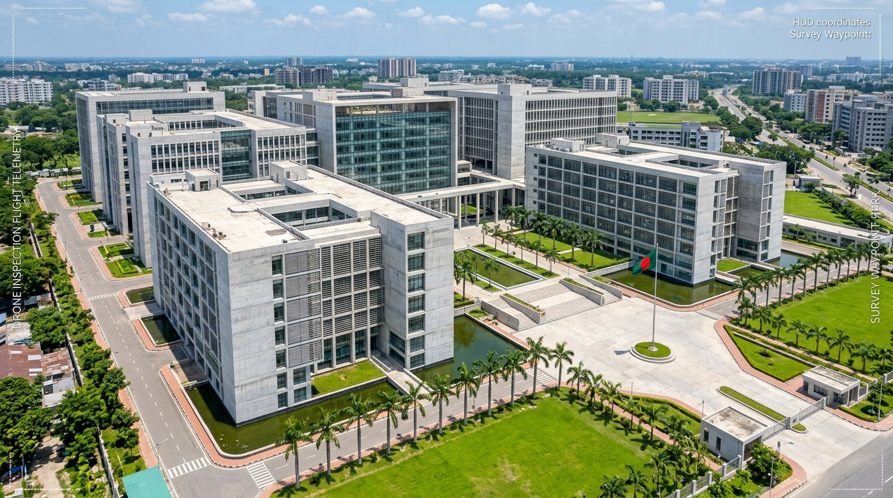
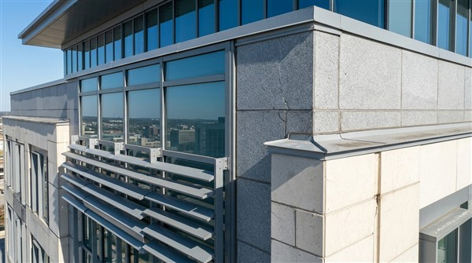
গণপূর্ত অধিদপ্তর (PWD) কর্তৃক নির্মিত দেশের বৃহত্তম প্রশাসনিক বহুতল মেগা কমপ্লেক্স ও আধুনিক গ্লাস-ফাসাদ ভবনের বহির্ভাগের নিখুঁত ড্রোন অডিট। হাই-রাইজ ভবনের প্রতিটি উইন্ডো সিল্যান্ট, স্ট্রাকচারাল কার্টেন গ্লাস, ছাদের প্যারাপেট জয়েন্ট এবং বহির্ভাগের ফাটল ড্রোন সেন্সরে মিলিমিটার-পর্যায়ে স্ক্যান করা হয়েছে।
আমাদের ১০০ মেগাপিক্সেল ড্রোন ক্যামেরার অবিশ্বাস্য ক্ষমতা নিজে পরীক্ষা করে দেখুন। মাউস বা আঙুল দিয়ে যেকোনো ফাটল বা ত্রুটির ওপর ম্যাগনিফাইং লেন্স পরিচালনা করুন।
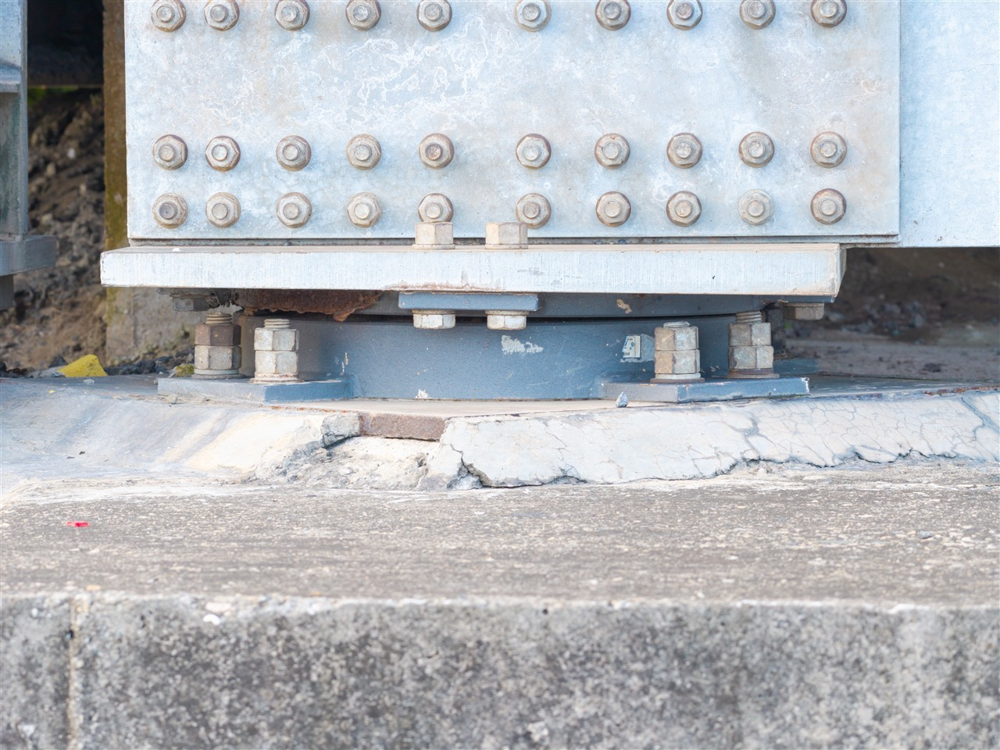
সরকারি প্রকল্পের জন্য এন্ড-টু-এন্ড মিডিয়া কভারেজ, স্ট্রাকচারাল ড্রোন সার্ভে ও আধুনিক সফটওয়্যার সমাধান।
সেতুর অগম্য পিয়ার ক্যাপ, বিয়ারিং প্যাড ও আন্ডার-ডেক গার্ডারের মিলিমিটার-লেভেল ফটো ও ভিডিও ডায়াগনস্টিক。
ভিআইপি পরিদর্শন, প্রকল্প উদ্বোধন ও বার্ষিক অর্জনের জন্য কালার-গ্রেডেড সিনেমাটিক ডকুমেন্টারি ও মোশন গ্রাফিক্স。
সরকারি দপ্তরের জন্য কাস্টমাইজড ডিজিটাল পোর্টাল, সার্চযোগ্য ব্রিজ ডাটাবেজ ও ক্লাউড আর্কাইভিং সলিউশন。
নদীর তলদেশের স্রোতধারা, এপ্রোচ করিডোর ও স্কয়ারিং (Scouring) জোনের অর্থোমোজাইক ড্রোন ম্যাপিং。
বহুতল সরকারি ভবন, সার্কিট হাউজ ও প্রশাসনিক কমপ্লেক্সের ফাসাদ ক্ল্যাডিং, প্যারাপেট ও ছাদের ড্রোন স্ট্রাকচারাল অডিট।
রংপুর সেন্ট্রাল হাব থেকে কুড়িগ্রাম, দিনাজপুর, বগুড়া, কুষ্টিয়া, যশোর, বরিশাল, ঢাকা সহ বাংলাদেশের যেকোনো প্রান্তে জরুরি প্রয়োজনে ২৪-৪৮ ঘণ্টার মধ্যে টিম মোবিলাইজেশন।
রংপুর সেন্ট্রাল হাব সহ কুড়িগ্রাম, দিনাজপুর, বগুড়া, কুষ্টিয়া, যশোর, বরিশাল, ঢাকা—দেশব্যাপী ৬৪ জেলায় সরাসরি অন-সাইট পরিদর্শন উন্মুক্ত।
রংপুর সেন্ট্রাল কমান্ডের সরাসরি নিয়ন্ত্রণে তিস্তা ও ঘাঘট অববাহিকার নদী তীরবর্তী গ্রামীণ সড়ক, সেতু ও কালভার্টসমূহের ডিজিটাল ডাটাবেজ প্রণয়ন ও বার্ষিক স্ট্রাকচারাল হেলথ অডিট চলমান।
DJI Mavic 4 Pro ক্যামেরায় সংগৃহীত ১০০০+ ছবির মধ্য থেকে নির্বাচিত শীর্ষ প্রকৌশল নমুনা (সকল ছবি এলজিইডি ও সরকারি প্রকল্পের বাস্তব কাজ)।
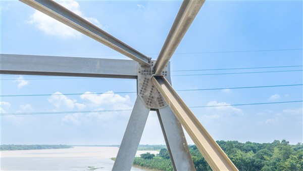
এলজিইডি (LGED)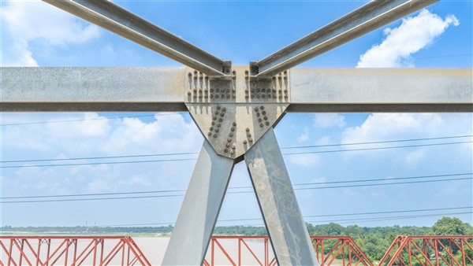
এলজিইডি (LGED)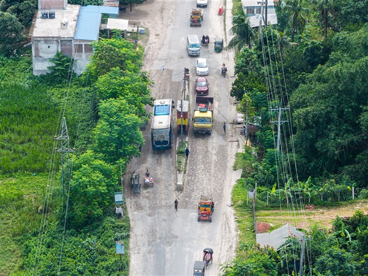
এলজিইডি (LGED)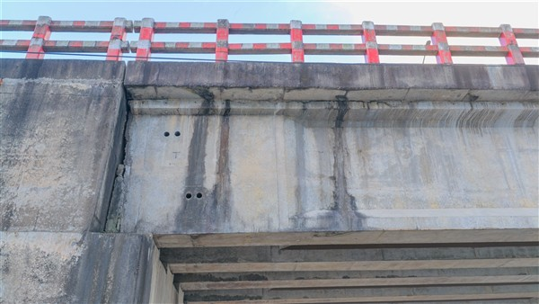
এলজিইডি (LGED)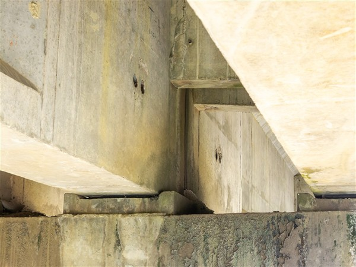
এলজিইডি (LGED)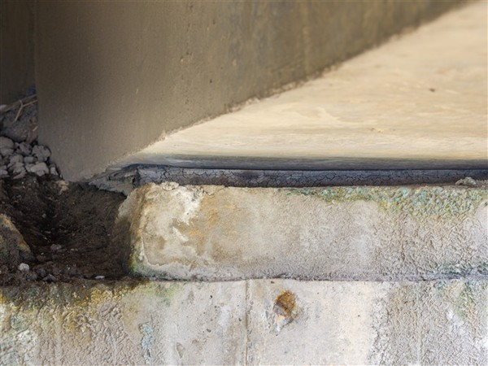
এলজিইডি (LGED)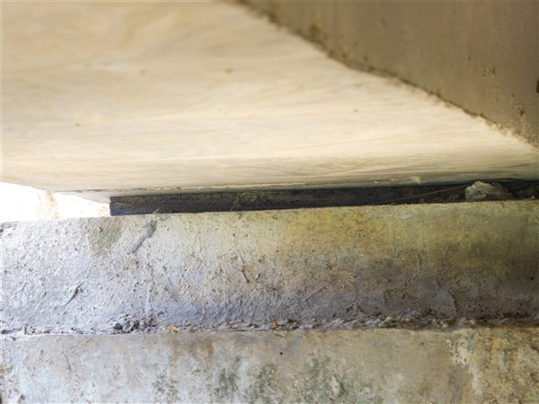
এলজিইডি (LGED)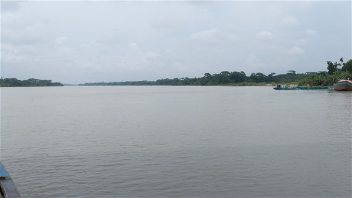
এলজিইডি (LGED)আমরা কেবল ভিডিও ধারণ করি না; সরকারি দপ্তরের জন্য কাস্টমাইজড ডিজিটাল পোর্টাল ও ডাটাবেজ সিস্টেমও তৈরি করি।
| অ্যাসেট আইডি | সেতুর বিবরণ | বিভাগ / জেলা | কাঠামো ধরন | স্প্যান সংখ্যা | সর্বশেষ অডিট | হেলথ ইনডেক্স | প্রকৌশল সুপারিশ |
|---|---|---|---|---|---|---|---|
| BR-KUS-TR-001 | কুষ্টিয়া গড়াই স্টিল ট্রাস রেলসেতু (স্প্যান ১-৪) | কুষ্টিয়া | Bangladesh Railway Steel Truss | 4 Spans | 2026-08-20 | 76% | টপ কর্ড রিভেট ও ভাইব্রেশন ড্যাম্পার চেক |
| BR-KUS-TR-002 | কুষ্টিয়া গড়াই ট্রাস রেলসেতু (স্লিপার ও ট্র্যাক করিডোর) | কুষ্টিয়া | Bangladesh Railway Steel Truss | 5 Spans | 2026-08-22 | 79% | পট বিয়ারিং প্লিন্থ ও গাছেট প্লেট ক্ষয় নিরাময় |
| LGED-KUS-RC-003 | কুষ্টিয়া হরিপুর সংযোগ আরসিসি সেতু | কুষ্টিয়া | LGED RCC T-Beam Girder | 3 Spans | 2026-08-23 | 88% | ডেক ড্রেনেজ পাইপ ও প্যারাপেট মেরামত |
| LGED-BAR-PC-001 | বরিশাল কীর্তনখোলা ডিভিশনাল গার্ডার সেতু (স্প্যান ১-৪) | বরিশাল | LGED Prestressed Concrete | 4 Spans | 2026-08-24 | 62% | আন্ডার-ডেক ডায়াফ্রাম বিম ও রিবার মরিচাকরণ নিরাময় |
| LGED-BAR-PC-002 | বরিশাল ডিভিশনাল গার্ডার সেতু (বিয়ারিং ও পিয়ার অডিট) | বরিশাল | LGED Prestressed Concrete | 4 Spans | 2026-08-25 | 68% | ইলাস্টোমেরিক বিয়ারিং প্যাড ও পিয়ার ক্যাপ সংস্কার |
| PWD-DHK-ADM-005 | জাতীয় সচিবালয় মেগা প্রশাসনিক কমপ্লেক্স | ঢাকা | PWD High-Rise Steel & Glass | 18 Fl. | 2026-03-15 | 91% | কার্টেন গ্লাস ওয়েদার সিলিং ও ব্র্যাকেট অডিট |
| LGED-RNG-BR-001 | রংপুর তিস্তা সংযোগ গার্ডার সেতু | রংপুর | LGED Prestressed Concrete | 7 Spans | 2026-01-18 | 93% | সেন্ট্রাল হাব রুটিন পর্যবেক্ষণ বহাল |
| LGED-KUR-BL-014 | কুড়িগ্রাম ধরলা সংযোগ বেইলি ব্রিজ | কুড়িগ্রাম | LGED Steel Bailey / Timber | 4 Spans | 2025-11-12 | 85% | বন্যা পরবর্তী রিভারবেড স্কয়ার অডিট |
| PWD-DHK-FL-021 | ঢাকা সেন্ট্রাল সচিবালয় ওভারপাস করিডোর | ঢাকা | PWD Prestressed Box Girder | 12 Spans | 2025-08-14 | 94% | এক্সপানশন জয়েন্ট ও ড্রেনেজ চ্যানেল রক্ষণাবেক্ষণ |
| LGED-DIN-RC-007 | দিনাজপুর আত্রাই রিভার আরসিসি গার্ডার সেতু | দিনাজপুর | LGED RCC T-Beam Girder | 5 Spans | 2025-05-20 | 74% | পিয়ার ক্যাপ ওয়াটারপ্রুফিং ও রেলিং রঙ |
| RHD-BOG-BG-011 | বগুড়া করতোয়া মহাসড়ক বক্স গার্ডার সেতু | বগুড়া | RHD Prestressed Box Girder | 6 Spans | 2025-09-28 | 89% | এপ্রোচ স্ল্যাব সেটলমেন্ট ও জয়েন্ট অডিট |
| LGED-JSH-PC-008 | যশোর কপোতাক্ষ ডিভিশনাল গার্ডার সেতু | যশোর | LGED Prestressed Concrete | 6 Spans | 2026-02-10 | 81% | পিয়ার কলাম কার্বনেশন ও উইপ-হোল পরিষ্কার |
বেসামরিক বিমান চলাচল কর্তৃপক্ষ (CAAB) ও প্রতিরক্ষা মন্ত্রণালয়ের বিধিমালা অনুযায়ী ১০০% অনুমোদিত আকাশসীমা ও সাব-সেন্টিমিটার নিরাপত্তা নিশ্চয়তা
আমাদের প্রতিটি ড্রোন ফ্লাইট পাইলট বেসামরিক বিমান চলাচল কর্তৃপক্ষ (CAAB) কর্তৃক লাইসেন্সপ্রাপ্ত ও প্রতিরক্ষা মন্ত্রণালয় থেকে ছাড়পত্রপ্রাপ্ত।
ডুয়াল আইএমইউ, ট্রিপল কম্পাস এবং সিগন্যাল লস বা ব্যাটারি ২৫% নামলে মিলিমিটার নির্ভুলতায় স্বয়ংক্রিয় রিটার্ন-টু-হোম (Smart RTH)।
ব্রিজের ঝুলন্ত তার, গার্ডার ট্রাস বা নদী অববাহিকার গাছের ডালপালার সাথে সংঘর্ষ এড়াতে মিলিমিটার-ওয়েভ রাডার ও বাইনোকুলার ভিশন ১৫ মিটার দূর থেকেই স্বয়ংক্রিয়ভাবে বাধা এড়িয়ে যায়।
ভার্চুয়াল ৩ডি জিও-ফেন্সিং সক্রিয় ট্রেন লাইন ও হাইওয়ে ট্রাফিকের ক্লিয়ারেন্স সীমানায় ড্রোনের অনুপ্রবেশ সম্পূর্ণ আটকে রাখে, ফলে যানবাহন চলাচল ১০০% স্বাভাবিক থাকে।
নদীর তীব্র বাতাস ও আর্দ্রতায় রিয়েল-টাইম কাইনেম্যাটিক্স (RTK-GNSS) নেটওয়ার্কের সাহায্যে মাত্র ±০.৮ সেমি পজিশন নির্ভুলতায় ড্রোন স্থির রেখে সাব-মিলিমিটার ফটো স্ক্যান সম্পন্ন হয়।
জাতীয় গুরুত্বপূর্ণ মেগা অবকাঠামোর ডেটা সামরিক গ্রেডের AES-256 বিট এনক্রিপশন, রোল-বেসড অ্যাক্সেস কন্ট্রোল (RBAC) ও সরকারি গোপনীয়তা বিধি মোতাবেক সংরক্ষিত ও হস্তান্তর করা হয়।
বন্যা, ভূমিকম্প বা নদীভাঙন পরবর্তী ক্ষতিগ্রস্ত সেতু ও সড়কের দ্রুত স্ট্রাকচারাল হেলথ মূল্যায়নে রংপুর হাব থেকে ২৪-৪৮ ঘণ্টার মধ্যে অগ্রাধিকার ভিত্তিতে জরুরি ড্রোন টিম মোতায়েন করা হয়।
এক ক্লিকে স্বয়ংক্রিয় প্রিন্ট-রেডি এক্সিকিউটিভ PDF অডিট রিপোর্ট জেনারেশন এবং RHD BMMS ও LGED GIS ডেটাবেজে সরাসরি ইম্পোর্টের পূর্ণ সুবিধা।
ড্রোন পরিদর্শন, সরকারি কমপ্লায়েন্স ও কারিগরি ডেলিভারি সম্পর্কে প্রকৌশলী ও ক্লায়েন্টদের সাধারণ প্রশ্নের উত্তর
না, কখনোই নয় (০% ট্রাফিক ব্যাঘাত)। আমাদের ড্রোন অপারেশন সম্পূর্ণ নন-ইনভেসিভ এবং নন-ডিসরাপ্টিভ। ব্রিজের উপর গাড়ি, পথচারী বা ট্রেন চলাচল ১০০% সচল রেখেই নিরাপদ দূরত্ব ও উচ্চতা বজায় রেখে উচ্চ-ক্ষমতার অপটিক্যাল জুম সেন্সরের সাহায্যে পরিদর্শন সম্পন্ন করা হয়।
আমাদের ব্যবহৃত DJI Mavic 4 Pro এবং Matrice প্ল্যাটফর্মের ১০০ মেগাপিক্সেল অপটিক্যাল সেন্সরের মাধ্যমে সাব-মিলিমিটার লেভেলে কংক্রিটের ০.১ মিমি সূক্ষ্ম হেয়ারলাইন ক্র্যাক, রিবারের মরিচাজনিত ক্ষয় ও স্প্যালিং, নিওপ্রিন বিয়ারিং প্যাডের বিকৃতি/ওজোন ক্র্যাক, ড্রেনেজ পাইপলাইন ও এক্সপানশন জয়েন্টের অবক্ষয় এবং রিভারবেড স্কাওয়ারিং অত্যন্ত নিখুঁতভাবে শনাক্ত ও পরিমাপ করা হয়।
একটি সাধারণ ব্রিজের প্রতি স্প্যান (Span) সম্পূর্ণ স্ক্যান ও ৩ডি ম্যাপিং করতে মাত্র ১৫ থেকে ২০ মিনিট সময় লাগে। ফলে প্রথাগত পদ্ধতিতে যেখানে কয়েক সপ্তাহ লেগে যেত, ড্রোন প্রযুক্তির মাধ্যমে মাত্র ১ দিনে একটি দীর্ঘ গার্ডার বা ট্রাস সেতুর সকল পিয়ার, বিয়ারিং ও ডেক সোফিট নিখুঁতভাবে অডিট করা সম্ভব।
আমরা সরবরাহ করি: (১) এক্সপোর্টেবল ক্লাউড BIAMS ওয়েব পোর্টাল ও সার্চযোগ্য ডেটাবেজ, (২) জিও-ট্যাগযুক্ত সাব-মিলিমিটার ৪কে ও আল্ট্রা-এইচডি ইমেজ/ভিডিও আর্কাইভ, এবং (৩) সরকারি ফরমেটে তাৎক্ষণিক তৈরি স্বয়ংক্রিয় স্ট্রাকচারাল হেলথ ইনডেক্স (SHI) এক্সিকিউটিভ PDF অডিট রিপোর্ট, যা যেকোনো সভায় উপস্থাপনের জন্য প্রস্তুত।
রংপুর সেন্ট্রাল হাব থেকে আমাদের বিশেষায়িত ফ্লাইট ও ইঞ্জিনিয়ারিং টিম জরুরি রিকুইজিশন প্রাপ্তির মাত্র ২৪ থেকে ৪৮ ঘণ্টার মধ্যে বাংলাদেশের যেকোনো প্রান্তে (৬৪ জেলায়) পূর্ণাঙ্গ ইকুইপমেন্ট সহ সরাসরি সাইটে মোবিলাইজ হতে সক্ষম।
হ্যাঁ। বন্যা, ভূমিকম্প বা নদীভাঙন পরবর্তী জরুরি অবকাঠামো মূল্যায়নে আমরা বিশেষ অগ্রাধিকার ভিত্তিতে তাৎক্ষণিক রিপোর্ট প্রদান করি। সংগৃহীত সকল জিআইএস কো-অর্ডিনেট এবং ৩ডি পয়েন্ট ক্লাউড সরাসরি RHD BMMS, LGED GIS এবং CAD সফটওয়্যারে ইম্পোর্ট করা যায়।
রংপুর সেন্ট্রাল হাব সহ দেশের যেকোনো প্রান্তের সরকারি প্রকল্পের জন্য ২৪-৪৮ ঘণ্টার মধ্যে আমরা প্রস্তুত।
Government Project Media & Structural Drone Inspection Specialist
বন্যা বা প্রাকৃতিক দুর্যোগে ক্ষতিগ্রস্ত জরুরি সেতু ও ভবনের দ্রুত মূল্যায়নের ক্ষেত্রে বিশেষ অগ্রাধিকার প্রদান করা হয়।